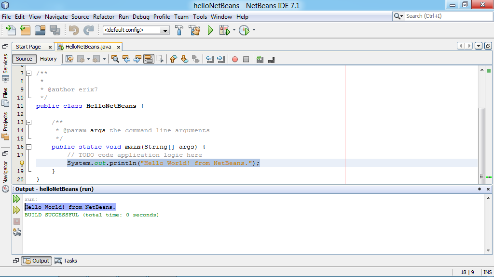

Tecnologia

- Primeiro Bimestre
- Programação em Blocos
- Scratch
- Segundo Bimestre
- Lógica de programação
- JAVA
-
Com o professor Thiago, a lógica de programação foi introduzida aos alunos. Inicialmente, aprendendo a programar um texto, depois aprendemos IF, ELSE, FOR e WHILE. No fim, o JSON foi apresentado para depois, como atividade final do bimestre, programarmos uma calculadora.

- Terceiro Bimestre
- Banco de Dados
- SQL e Access
- Quarto Bimestre
- Produção de site
- HTML, CSS e JavaScript
O primeiro bimestre de T.I. introduzia o conteúdo de programação por meio do Scracth, um site onde é possível realizar programação em blocos. Nele os alunos poderiam programar jogos, animações e ferramentas, como uma calculadora. A atividade final consistia em criar um jogo com base na área do conhecimento definida pelo professor Eric para cada grupo.
Ainda com o professor Thiago, aprendemos sobre banco de dados, inicialmente com o Microsoft Access. Nele, criamos tabelas e formulários. Com a chegada do professor Cosmerino, aprendemos a programar um banco de dados com o SQL.
Com o professor Cosmerino, no quarto bimestre, iniciamos a atividade final, que consiste na criação de um site com html, css e javascript.